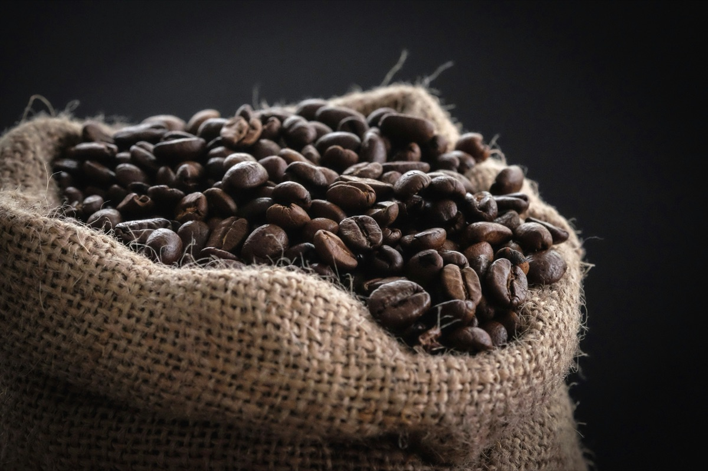
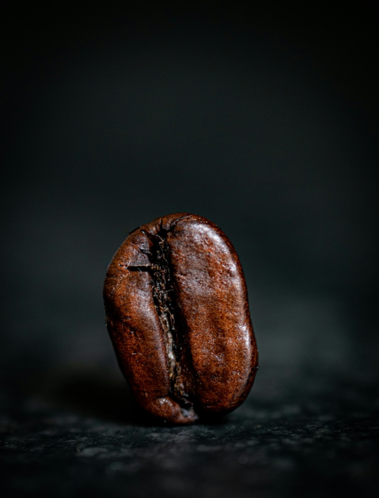
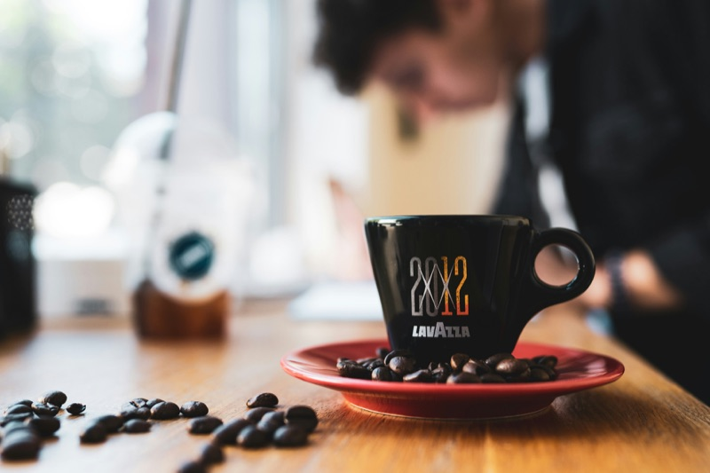
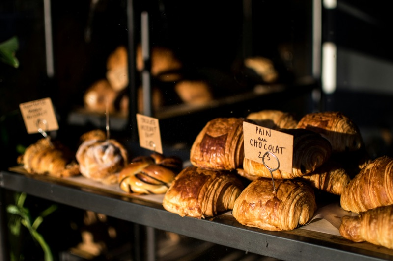

豆は、すべてスペシャルティ。
SCAA（米国スペシャルティコーヒー協会）の評価で80点以上の豆だけを、世界中の生産地から少量ずつ仕入れています。

ETHIOPIA / Yirgacheffe
— What we believe
SCAA（米国スペシャルティコーヒー協会）の評価で80点以上の豆だけを、世界中の生産地から少量ずつ仕入れています。
その週に飲む分だけを焙煎。豆ごとの個性を最大限に引き出すよう、すべて手動でコントロール。
本を読む、人と話す、ただ何もしない。コーヒー一杯の時間が、あなたにとっての「余白」になりますように。
— Our commitment

Step 01 / Sourcing
エチオピア、コロンビア、グアテマラ。世界中の信頼できる農園から、その年の最も状態の良い豆を厳選。生豆の段階から、すべての豆を私たちの目で確認しています。
詳しく見る →
Step 02 / Roasting
豆ごとの個性を最大限に引き出すため、焙煎度合いはすべて手動でコントロール。煙の色、豆のはぜる音、立ち上る香り。すべてを五感で見極めます。
焙煎へのこだわり →Step 03 / Brewing
注文ごとに、ハンドドリップで丁寧に。お湯の温度、注ぎ方、待ち時間。同じ豆でも、淹れ方ひとつで表情が変わります。最高の状態であなたへ。
抽出のはなし →DRIP COFFEE
柑橘系のフレッシュな酸味と、紅茶のような後味。すっきりと飲みやすい一杯。
¥620

CAFÉ LATTE
深煎りのコクとミルクの甘みが調和する、Café Noirの定番。
¥580

SEASONAL
桜の香りをほのかに感じる春限定ブレンド。お花見のお供にも。
¥680

— Owner message
15年間、東京のスペシャルティコーヒー店で焙煎を続けてきました。独立して自分の店を持つとき、決めていたのは「コーヒーだけを売らない」こと。
お客様が一杯を飲み終えるまでの時間そのものを、丁寧にお渡しできるお店にしたい。忙しい毎日の中で、ふと立ち寄って深呼吸できる場所。Café Noirは、そんな場所でありたいと思っています。
店主 / 焙煎士佐藤 健一


— Access
— Newsletter
新しい入荷豆や季節限定メニューの情報を、月に一度お届けします。